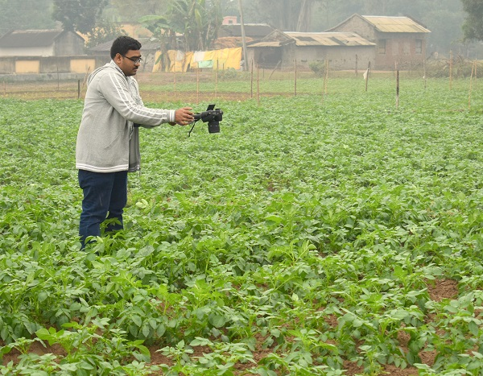
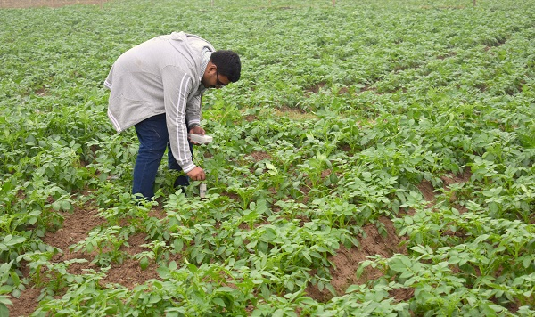
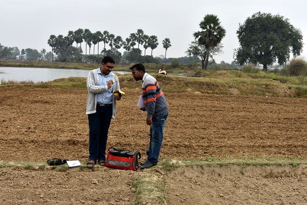
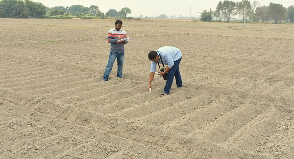

Access In-situ & EO Data
Blog Post:
[20 Dec 2017]
RS-2 satellite data download (MDA)+quality check+processing is over. Passed.
[09 Dec 2017]Heavy rainfall during the 1st campaign.
[01 Dec 2017]Field campaign 01 | Date: 08-12-2017 to 10-12-2017
Field crew: Dipankar Mandal (Research Scholar, IITBombay); Dr. Soumen Bera (Assistant Professor, BCKV Barddhaman Campus); Mr. Kousik.
Lab-segment team: Vineet Kumar (Research Scholar, IITBombay); Dr. Soumen Bera (Assistant Professor, BCKV Barddhaman Campus); Dr. Avik Bhattacharya & Dr. Y. S. Rao (CSRE, IITBombay)
Test Site Images
PAI measurement in Potato field with Digital Photographs (Dipankar).
Soil moisture measurement in Potato field with Theta Probe (Dipankar).
Dipankar with Dr. Soumen Bera: taking GPS with Trimble.
Dipankar with Dr. Soumen Bera: taking soil moisture in a just planted potato field.